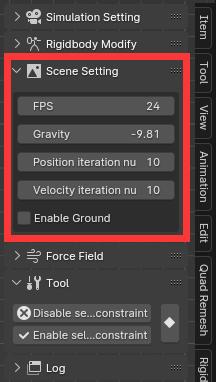

场景设置
FPS：应该与 Blender 一致，FPS 越高，场景的速度就越快。 如果你想让你的场景看起来更快，你可以减少以加快时间的流逝。
重力：平行于全局 Z 轴的力，通常为 -9.81。
子步数: 将一个动画帧拆分成多个小帧，然后进行模拟。用于解决高速运动物体的穿透问题。这是性能消耗很大的操作，如无必要，请设置为1。
Sub step means more accurate simulation, but sometimes you may find that the rigidbody never end after increasing this, if this is not you want, you can decrease sub step or increase damping.
Never end movement issues explan: the inaccurate simulation means inaccurate numerical calculation, which will lead the small number is truncated, this means more energy is loosing over time. On the other hand, too accurate means the energy that should be lost is retained, so the simulation results show that it is more inclined to motion. If you want something like the spring toy below, this is absolute you need.
The video below shows when a high-speed object moving, increase the sub step means the movement is split into small movement, so the rigidbody can interact.
位置迭代次数：值越高，模拟结果的位置越准确。
速度迭代次数：值越高，模拟结果的速度越准确。
长的刚体链或模型相交需要增加迭代次数，因为长链需要迭代扩散才能获得准确的位置。